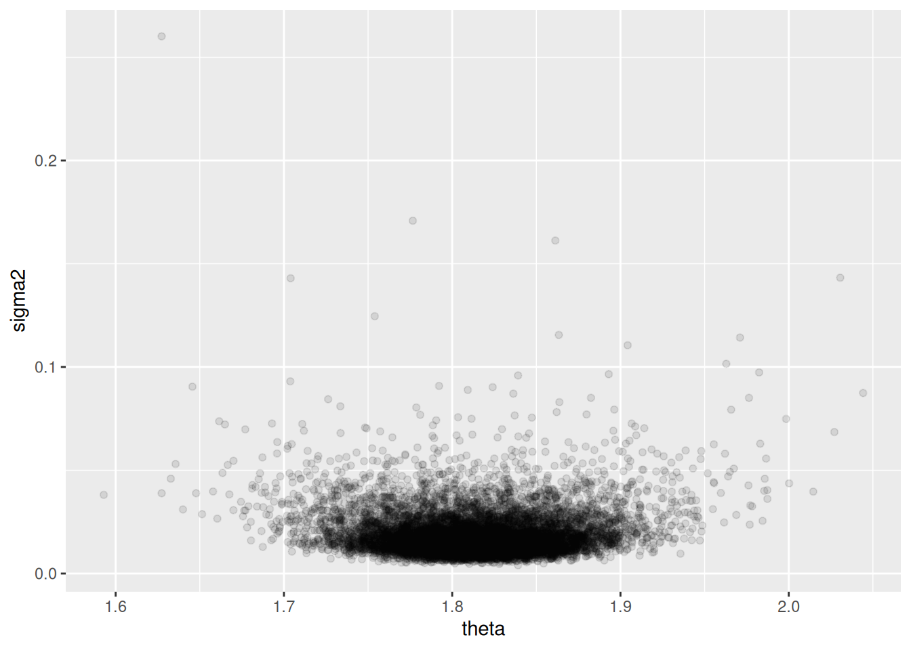
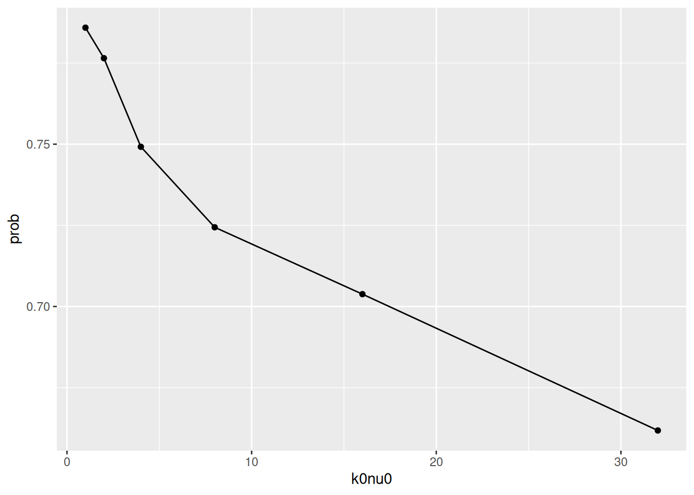

y = c(1.64, 1.70, 1.72, 1.74, 1.82, 1.82, 1.82, 1.90, 2.08)
mean(y)[1] 1.804444var(y)[1] 0.01687778A normal variable \(Y\) with mean \(\theta\) and variance \(\sigma^2\) (and thus standard deviation \(\sigma\)) we denote
\[Y \sim \mathcal{N}(\theta, \sigma^2)\]
and \(Y\) has PDF
\[ p(y) = \frac{1}{\sqrt{2\pi\sigma}} \text{exp}\left(-\frac{1}{2} \frac{(y - \theta)^2}{\sigma^2}\right) \]
Due to the central limit theorem, the normal model is used all the time to model sample averages or values known to be the additive result of several random variables.
There are two parameters in the normal model. For simplicity, let’s first assume that the variance is known. Later we will show how we can perform inference jointly for the mean and variance, but this result will still be useful especially in Chapter 6, where Gibbs sampling requires full conditional distributions of individual parameters.
To do inference assuming \(\sigma^2\) is known, we need to identify the sampling distribution and prior distribution, since we must calculate
\[\begin{align} p(\theta \mid \sigma^2, y_1, \dots, y_n) \propto p(y_1, \dots, y_n \mid \theta, \sigma^2) \times p(\theta \mid \sigma^2) \end{align}\]
For the sampling distribution,
\[\begin{align} p(y_1, \dots, y_n \mid \theta, \sigma^2) &= \prod_{i = 1}^n p(y_i \mid \theta, \sigma^2) \\ &= \prod_{i = 1}^n \frac{1}{\sqrt{2 \pi \sigma^2}} \text{exp}\left(-\frac{1}{2} \frac{(y_i - \theta)^2}{\sigma^2} \right) \\ &\propto \text{exp}\left[ -\frac{1}{2} \sum_{i = 1}^n \frac{(y_1 - \theta)^2}{\sigma^2} \right] \\ &\propto \text{exp}\left[ -\frac{1}{2} \left( \frac{\sum y_i^2}{\sigma^2} - 2 \frac{\theta \sum y_i}{\sigma^2} + \frac{n\theta^2}{\sigma^2} \right) \right] \\ &\propto \text{exp}\left[ -\frac{1}{2} \left( \frac{\sum y_i^2}{\sigma^2} - 2 \frac{\theta \sum y_i}{\sigma^2} + \frac{n\theta^2}{\sigma^2} \right) \right] \\ &\propto \text{exp}\left[ -\frac{1}{2} \left( \frac{\sum y_i^2}{\sigma^2} - 2 \frac{\theta \sum y_i}{\sigma^2} \right) \right] \end{align}\]
From this we know two things:
In particular, 2 is a new strategy for trying to identify the conjugate prior family. Since the exponential terms in the sampling model and prior distribution must be combined to produce the same class of posterior distribution, we must pick a prior distribution \(\propto \text{exp}(c_1, (\theta - c_2)^2)\). Conveniently, normal distributions themselves have these terms. We can verify that the normal family is conjugate to the normal sampling model. Let \(\theta \mid \sigma^2 \sim \mathcal{N}(\mu_0, \tau_0^2)\) (interpretations of the prior parameters comes later):
\[\begin{align} p(\theta \mid \sigma^2, y_1, \dots, y_n) &\propto p(y_1, \dots, y_n \mid \theta, \sigma^2) \times p(\theta \mid \sigma^2) \\ &\propto \text{exp}\left( -\frac{1}{2\sigma^2} \sum_{i=1}^n (y_i - \theta)^2 \right) \times \text{exp}\left(-\frac{1}{2 \tau_0^2} (\theta - \mu_0)^2\right) \\ &= \text{exp}\left[ -\frac{1}{2} \left( \frac{1}{\tau_0^2}(\theta^2 - 2\theta\mu_0 + \mu_0^2) + \frac{1}{\sigma^2}(\sum y_i^2 - 2\theta y_i + n\theta^2) \right) \right] \\ &= \text{exp}\left[ -\frac{1}{2} \left( \left(\frac{1}{\tau_0^2} + \frac{n}{\sigma^2}\right)\theta^2 + 2\left( \frac{\mu_0}{\tau_0^2} + \frac{\sum y_i}{\sigma^2} \right)\theta \right) \right] \\ \end{align}\]
To simplify this, let
Then
\[\begin{align} p(\theta \mid \sigma^2, y_1, \dots, y_n) &\propto \text{exp}\left[ -\frac{1}{2} (a\theta^2 - 2b\theta) \right] \\ &\propto \text{exp}\left[ -\frac{1}{2}(a\theta^2 - 2b\theta + b^2/a) + \frac{1}{2} b^2 / a \right] & \text{Completing the square} \\ &\propto \text{exp}\left[ -\frac{1}{2}(a\theta^2 - 2b\theta + b^2/a) \right] &\text{Throw away constants} \\ &\propto \text{exp}\left[ -\frac{1}{2}a(\theta^2 - 2b\theta / a + b^2/a^2) \right] \\ &\propto \text{exp}\left[ -\frac{1}{2}a(\theta - b/a)^2 \right] \\ &\propto \text{exp}\left[ -\frac{1}{2}\left( \frac{\theta - b/a}{1 / \sqrt{a}} \right)^2 \right] \\ &= \text{dnorm}(\theta, b/a, 1/a). \end{align}\]
Let these posterior parameters be \(\mu_n\) and \(\tau_n^2\). In later chapters we will commonly follow this naming scheme: initial guesses of parameters are denoted \(\theta_0\), then the posterior parameters are denoted \(\theta_n\), i.e. the updated parameters after a sample of size \(n\).
Specifically,
\[\begin{align} \mu_n &= b/a = \frac{\frac{1}{\tau_0^2} \mu_0 + \frac{n}{\sigma^2}\bar{y}}{\frac{1}{\tau_0^2} + \frac{n}{\sigma^2}} \\ \tau_n^2 &= \frac{1}{a} = \frac{1}{\frac{1}{\tau_0^2} + \frac{n}{\sigma^2}}. \end{align}\]
So \(\theta \mid \sigma^2, y_1, \dots, y_n \sim \mathcal{N}(\mu_n, \tau_n^2)\).
Notice in the posterior parameters the frequency of inverse variances i.e. \(\frac{1}{\tau_0^2}, \frac{n}{\sigma^2}\). This hints at the importance of using precision to understand and parameterize our normal prior and posterior distributions. Specifically, it is much more concise to express the above parameters in terms of variance. Specifically, if we let \(\tilde{\tau_n^2} = 1 / \tau_n^2\), i.e. the posterior precision, and similar tildes for the over variables,
\[\tilde{\tau_n^2} = \tilde{\tau_0^2} + n\tilde{\sigma^2}\]
So intuitively, our posterior precision is a combination of our prior belief in the precision of the true population mean of the data, plus the (assumed known) precision, where a larger sample size \(n\) increases this precision.
Using precision, the fact that \(\mu_n\) is a weighted average of prior and sample information becomes more clear. Notice
\[\begin{align} \mu_n &= \frac{\frac{1}{\tau_0^2}}{ \frac{1}{\tau_0^2} + \frac{n}{\sigma^2} } \mu_0 + \frac{\frac{n}{\sigma^2}}{ \frac{1}{\tau_0^2} + \frac{n}{\sigma^2} } \bar{y} \\ &= \frac{\tilde{\tau_0^2}}{\tilde{\tau_0^2} + n\tilde{\sigma^2}} \mu_0 + \frac{n\tilde{\sigma^2}}{\tilde{\tau_0^2} + n\tilde{\sigma^2}} \bar{y} \end{align}\]
So the posterior mean is a weighted average of the prior expectation of the mean \(\mu_0\) weighted by the precision of that mean \(\tilde{\tau_0^2}\), and the observed sample mean \(\bar{y}\) weighted by our sample size \(n\) and the (assumed known) precision \(\tilde{\sigma^2}\).
How do we select \(\tau_0^2\)? One intuitive way to think about it (as we have done with one-parameter models) is by treating our prior parameters for \(\theta\) as derived from \(\kappa_0\) prior “observations” from the same (or similar) population that we are sampling from. Then \(\mu_0\) is the average of these prior observations, and let \(\tau_0^2 = \sigma^2 / \kappa_0\) be the variance of the mean of these prior observations. Then the posterior mean simplifies quite nicely to:
\[\begin{align} \mu_n &= \frac{\kappa_0}{\kappa_0 + n}\mu_0 + \frac{n}{\kappa_0 + n}\bar{y} \\ &= \frac{\kappa_0}{\kappa_n}\mu_0 + \frac{n}{\kappa_n}\bar{y} & \text{Let $\kappa_n = \kappa_0 + n$} \\ \end{align}\]
which is just a weighted average of \(\mu_0\) and \(\bar{y}\) given the number of prior “observations” \(\kappa_0\) and the sample size \(n\). We will take advantage of this when jointly estimating the mean and variance for the normal model. The idea is to first estimate the variance, then assume that variance \(\sigma^2\) is known such that \(\tau_0^2 = \sigma^2 / \kappa_0\) can be estimated.
To obtain the posterior predictive distribution, instead of doing complex integration, we can use a trick.
\(\tilde{Y}\) is normally distributed with mean \(\theta\) and variance \(\sigma^2\). This is equivalent to saying
\[\tilde{Y} = \theta + \tilde{\epsilon}\]
where \(\theta \sim \mathcal{N}(\mu_n, \tau_n^2\), \(\tilde{\epsilon} \sim \mathcal{N}(0, \sigma^2)\). So adding these normal distributions together gives
\[\tilde{Y} \mid \sigma^2, y_1, \dots, y_n \sim \mathcal{N}(\mu_n, \tau_n^2 + \sigma^2)\]
The wing lengths of 9 members of a species of “midge” are measured. We are interested in estimates of the mean wing length and variance. Prior information from other populations suggests that wing lengths are typically around 1.9mm, so our initial estimate \(\mu_0 = 1.9\). One way of assigning a prior estimate of the variance of the mean \(\tau_0^2\) is to pick the spread of the prior such that all of its mass is above 0, since wing lengths can’t be negative. So we select \(\tau_0\) such that 2 standard deviations from 1.9 > 0: \(\tau_0 = 0.95\).
Our data are:
y = c(1.64, 1.70, 1.72, 1.74, 1.82, 1.82, 1.82, 1.90, 2.08)
mean(y)[1] 1.804444var(y)[1] 0.01687778Since we are assuming for now that \(\sigma^2\) is known, let’s use \(s^2 = \sigma^2\).
Now calculating \(\mu_n, \tau_n^2\) is simply done by plugging in the relevant formulas:
\[\begin{align} \mu_n &= \frac{1.11 (1.9) + \frac{9}{0.017} 1.804}{1.11 + \frac{9}{0.017}} = 1.805 \\ \tau_n^2 &= \frac{1}{1.11 + \frac{9}{0.017}} = 0.002 \end{align}\]
qnorm(c(0.025, 0.975), 1.805, sqrt(0.002))[1] 1.717348 1.892652For joint inference, we wish to compute the joint probability distribution of \((\theta, \sigma^2)\) given the data, which proceeds much like before
\[ p(\theta, \sigma^2 \mid y_1, \dots, y_n) = \frac{p(y_1, \dots, y_n \mid \theta, \sigma^2) p(\theta, \sigma^2)}{p(y_1, \dots, y_n)} \]
Notice that the only real difference in this two parameter case is the joint prior \(p(\theta, \sigma^2)\), which we should select a conjugate prior distribution for to simplify posterior calculation.
Notice that if we split up
\[p(\theta, \sigma^2) = p(\theta \mid \sigma^2) p(\sigma^2)\] then, from the previous section, we already know that the normal distribution is a conjugate prior for the \(p(\theta \mid \sigma^2)\): \(\mathcal{N}(\mu_0, \tau_0^2)\). With this selection, we have
\[\begin{align} p(\theta, \sigma^2) &= p(\theta \mid \sigma^2) p(\sigma^2) \\ &= \text{dnorm}(\theta, \mu_0, \tau_0) \times p(\sigma^2) \\ \end{align}\]
Now if we let \(\tau_0\) depend on \(\sigma^2\) as we explored in the previous section, this simplifies calculations. If \(\tau_0\) is not proportional to \(\sigma^2\), then there is no good closed-form solution for a posterior distribution, which is a “semiconjugate” prior; see Chapter 6 for details. Specifically, if we let \(\tau_0^2 = \sigma^2 / \kappa_0 \implies \tau_0 = \sigma / \sqrt{\kappa_0}\), i.e. \(\tau_0^2\) is the variance of the mean of a sample of size \(\kappa_0\) from a population with variance \(\sigma^2\):
\[\begin{align} p(\theta, \sigma^2) &= \text{dnorm}(\theta, \mu_0, \tau = \sigma / \sqrt{\kappa_0}) \times p(\sigma^2) \end{align}\]
Now we need to specify \(p(\sigma^2)\). We are told that the Gamma distribtion (with support on \((0, \infty)\)) is not conjugate for the normal variance, but it is conjugate for the normal precision \(1 / \sigma^2\). It’s not mentioned how this is determined, but it probably has something to do with the ease of expressing posterior estimates in terms of precision in the previous section where \(\sigma^2\) is known.
Let \(1 / \sigma^2 \sim \text{Gamma}(a, b)\). Like we have done previously, we would like to parameterize this distribution such that we can interpret choices of the parameters of the prior as sensibly conveying some prior expectation about the precision in this case. If we let
We will show later that we can interpret \((\sigma^2_0, \nu_0)\) as the sample variance and sample size of a set of prior observations.
If \(1 / \sigma^2 \sim \text{Gamma}(\nu_0 / 2, \sigma^2_0 \nu_0 / 2)\), then notice that \(\mathbb{E}(1 / \sigma^2) \neq 1 / \mathbb{E}(\sigma^2)\) since the inverse is not a linear function. To calculate \(\mathbb{E}(\sigma^2)\) requires something more complicated (law of the unconscious statistician?), or we can use the fact that \(\sigma^2 \sim \text{Inverse-Gamma}(\nu_0/2, \sigma^2_0 \nu_0 / 2)\), for which
From this you can already intuit how \(\nu_0\) is a sample size, and \(\sigma^2_0\) is an initial guess of the sample variance where the expectation of \(\sigma^2\) more closely approaches \(\sigma^2_0\) as \(\nu_0\) increases.
Now we have fully specified (1) our prior distributions:
\[\begin{align} 1 / \sigma^2 &\sim \text{Gamma}(\nu_0 / 2, \sigma^2_0 \nu_0 / 2) \\ \theta \mid \sigma^2 &\sim \mathcal{N}(\mu_0, \sigma^2 / \kappa_0), \\ \end{align}\]
and (2) our sampling model:
\[ Y_1, \dots, Y_n \mid \theta, \sigma^2 \sim \text{ i.i.d. } \mathcal{N}(\theta, \sigma^2) \]
Now we wish to calculate \(p(\theta, \sigma^2 \mid y_1, \dots, y_n)\) which we can decompose to a product of marginal and conditional probabilities, just like the prior:
\[ p(\theta, \sigma^2 \mid y_1, \dots, y_n) = p(\theta \mid \sigma^2, y_1, \dots, y_n) p(\sigma^2 \mid y_1, \dots, y_n) \]
This is convenient because we already know \(p(\theta \mid \sigma^2, y_1, \dots, y_n)\) from the one-parameter case:
\[\begin{align} \theta \mid \sigma^2, y_1, \dots y_n \sim \mathcal{N}(\mu_n, \tau_n^2) \end{align}\]
where
\[\begin{align} \mu_n &= \frac{ \frac{1}{\tau_0^2} \mu_0 + \frac{n}{\sigma^2} \bar{y} }{ \frac{1}{\tau_0^2} + \frac{n}{\sigma^2} } \\ &= \frac{ \frac{\kappa_0}{\sigma^2} \mu_0 + \frac{n}{\sigma^2} \bar{y} }{ \frac{\kappa_0}{\sigma^2} + \frac{n}{\sigma^2} } & \text{Sub $\tau_0^2 = \sigma^2 / \kappa_0$} \\ &= \frac{ \kappa_0 \mu_0 + n \bar{y} } { \kappa_0 + n } & \text{$\sigma^2$s cancel} \\ \end{align}\]
and
\[\begin{align} \tau_n^2 &= \frac{1}{\frac{1}{\tau_0^2} + \frac{n}{\sigma^2}} \\ &= \frac{1}{\frac{\kappa_0}{\sigma^2} + \frac{n}{\sigma^2}} & \text{Sub $\tau_0^2 = \sigma^2 / \kappa_0$} \\ &= \frac{\sigma^2}{\kappa_0 + n}. \end{align}\]
If we let \(\kappa_n = \kappa_0 + n\) (remember we will interpret \(\kappa_0\) as a prior sample size, and \(n\) as this sample size), then we have
\[\begin{align} \theta \mid \sigma^2, y_1, \dots y_n \sim \mathcal{N}(\mu_n, \sigma^2 / \kappa_n) \end{align}\]
Where like before, \(\mu_n\) is a weighted average of \(\mu_0\) and \(\bar{y}\) dependent on the “prior” sample size \(\kappa_0\) and the sample size \(n\), and \(\sigma^2 / \kappa_n\) is the sampling variance of the sample mean given known variance \(\sigma^2\) and our “sample size” \(\kappa_n\).
Recall our posterior distribution decomposition:
\[ p(\theta, \sigma^2 \mid y_1, \dots, y_n) = p(\theta \mid \sigma^2, y_1, \dots, y_n) p(\sigma^2 \mid y_1, \dots, y_n) \]
Once we calculate the second component, the posterior distribution of \(\sigma^2\), we will have fully specified the joint posterior distribution.
\[\begin{align} p(\sigma^2 \mid y_1, \dots, y_n) &\propto p(\sigma^2) p(y_1, \dots, y_n \mid \sigma^2) \\ &= p(\sigma^2) \int p(y_1, \dots, y_n \mid \theta, \sigma^2) p(\theta \mid \sigma^2) \; d\theta \\ &= \text{dinverse-gamma}(\sigma^2, \nu_0 / 2, \sigma_0^2 \nu_0 / 2) \times \\ &\quad \int \left[ \left( \prod_{i = 1}^{n} p(y_i \mid \theta, \sigma^2) \right) \times \text{dnorm}(\theta, \mu_0, \sigma^2 / \kappa_0) \right] \; d\theta \\ \end{align}\]
This integral is left as an exercise (Exercise 5.3). The result is that
\[\begin{align} \sigma^2 \mid y_1, \dots, y_n & \sim \text{Inverse-Gamma}(\nu_n / 2, \sigma_n^2 \nu_n / 2) \\ 1 / \sigma^2 \mid y_1, \dots, y_n &\sim \text{Gamma}(\nu_n / 2, \sigma_n^2 \nu_n / 2) \end{align}\]
where
\(\nu_n\) is fairly intuitive, it acts as a sample size which is the “prior sample size” of the variance plus the sample size \(n\). \(\sigma_n^2\) is a bit harder to understand. There are three terms here. The first, \(\nu_0 \sigma_0^2\), can be thought of as a prior sum of squared observations from the sample mean (\(\nu_0\) prior samples with variance \(\sigma_0^2\)). Similarly, \((n - 1)s^2\), where \(s^2 = \sum_{i = 1}^n (y_i - \bar{y})^2 / (n - 1)\), is literally the sum of squared (actually observed) observations from the sample mean. Lastly, the third term increases the posterior variance if the observed sample mean \((\bar{y})\) is far away from the expected prior mean \(\mu_0\), since this would suggest higher variance. All three “sum of squares-ish” terms are combined, then divided by the total number of “observations” \(\nu_n = n + \nu_0\), as commonly done to estimate variance from a sample.
This is a lot to handle, since there are a lot of moving parts. In sum, for inference with the normal model, there are four prior parameters to specify:
Then we have
The updated parameters are
So that the posterior is finally
Note how the prior sample sizes for the variance and the mean are decoupled because they update differently. However, it’s common to set \(\nu_0 = \kappa_0\).
Back to midge wing length, although this time, we are leaving our estimate of the variance of the population free as well.
From other populations, say that we weakly believe that our prior estimates of the population mean and variance are \(\mu_0 = 1.9\) and \(\sigma_0^2 = 0.01\), respectively. Since this is a weak belief we will pick \(\kappa_0 = \nu_0 = 1\). Now our prior distributions are
Recall that our data are
y = c(1.64, 1.70, 1.72, 1.74, 1.82, 1.82, 1.82, 1.90, 2.08)
n = length(y)
ybar = mean(y)
s2 = var(y)Now we calculate the parameters of the posterior distributions
So our joint posterior distribution is
\[\begin{align} 1 / \sigma^2 \mid y_1, \dots, y_n &\sim \text{Gamma}(10/2 = 5, 10(0.015 / 2) = 0.075) \\ \theta \mid \sigma^2, y_1, \dots, y_n &\sim \mathcal{N}(1.814, \sigma^2 / 10) \end{align}\]
Now we can plot the posterior distribution for various values of \(\theta\) and \(\sigma^2\).
# Prior
mu0 = 1.9
kappa0 = 1
s20 = 0.01
nu0 = 1
kappan = kappa0 + n
nun = nu0 + n
mun = (kappa0 * mu0 + n * ybar) / kappan
s2n = (1 / nun) * (nu0 * s20 + (n - 1) * s2 + (kappa0 * n / kappan) * (ybar - mu0)^2)
Theta = seq(1.6, 2.0, by = 0.005)
Sigma2 = seq(0, 0.04, by = 0.0001)
library(invgamma)
post.func = function(theta, sigma2) {
dnorm(theta, mun, sqrt(sigma2 / kappan)) * dinvgamma(sigma2, nun / 2, s2n * nun / 2)
}
d = outer(Theta, Sigma2, post.func)
rownames(d) = Theta
colnames(d) = Sigma2
df = melt(d)Warning in type.convert.default(X[[i]], ...): 'as.is' should be specified by
the caller; using TRUE
Warning in type.convert.default(X[[i]], ...): 'as.is' should be specified by
the caller; using TRUEcolnames(df) = c('theta', 'sigma2', 'density')
ggplot(df, aes(x = theta, y = sigma2, z = density)) +
geom_contour(aes(color = ..level..)) +
guides(color = FALSE)Warning: The `<scale>` argument of `guides()` cannot be `FALSE`. Use "none" instead as
of ggplot2 3.3.4.Warning: The dot-dot notation (`..level..`) was deprecated in ggplot2 3.4.0.
ℹ Please use `after_stat(level)` instead.
We can simulate values from the posterior by first sampling \(\sigma^{2(n)}\) from its inverse gamma distribution, and \(\theta^{(n)}\) from its normal distribution conditioned on \(\sigma^{2(n)}\). Then \(\{\theta^{(n)}, \sigma^{2(n)}\}\) represent samples from the joint distribution \(p(\theta, \sigma^2 \mid y_1, \dots, y_n)\), and either set of values by themselves represents samples from the full marginal distribution. This is intuitive for \(\sigma^{2(n)}\) but less so for \(\theta^{(n)}\). The key is to notice that, although \(\theta^{(n)}\) is sampled conditioned on \(\sigma^{2(n)}\), multiple \(\theta^{(n)}\) samples are conditioned on multiple different \(\sigma^{2(n)}\)s, so the \(\theta^{(n)}\) do indeed represent samples from the marginal distribution.
s2.mc = rinvgamma(10000, nun / 2, s2n * nun / 2)
theta.mc = rnorm(10000, mun, sqrt(s2.mc / kappan)) # Accepts a vector of parameters
mean(theta.mc)[1] 1.813692quantile(theta.mc, c(0.025, 0.975)) 2.5% 97.5%
1.725999 1.901429 ggplot(data.frame(sigma2 = s2.mc, theta = theta.mc)) +
geom_point(aes(x = theta, y = sigma2), alpha = 0.1)
What if we want to use no prior information? See what happens to our posterior distribution \(\kappa_0, \nu_0 \rightarrow 0\). Using the formula above,
Then, the “posterior” (plugging in \(\kappa_0 = \nu_0 = 0\) and the posterior parameters \(\sigma_n^2, \mu_n\) and simplifying) would be
\[\begin{align} 1 / \sigma^2 \mid y_1, \dots, y_n &\sim \text{Gamma}(\frac{n}{2}, \frac{1}{n} \frac{n}{2}\sum (y_i - y)^2)$ \\ \theta \mid \sigma^2, y_1, \dots, y_n &\sim \mathcal{N}(\bar{y}, \frac{\sigma^2}{n}) \end{align}\]
With “significant algebra”, you can show that inference this way results in
\[\frac{\theta - \bar{y}}{s / \sqrt{n}} \mid y_1, \dots, y_n \sim t_{n - 1}\]
i.e. a \(t\) distribution with \(n - 1\) degrees of freedom. This is similar to the sampling distribution of \(t\) statistic:
\[\frac{\bar{Y} - \theta}{s / \sqrt{n}} \mid \theta \sim t_{n - 1}\]
but like the Bayesian vs Frequentist confidence intervals discussion in Chapter 3, they are philosophically different. The first describes uncertainty about the true mean conditional on the data, while the second describes uncertainty about the observed sample mean given the true population mean.
Now we are diving into the properties of estimators for posterior parameters.
A point estimator of an unknown parameter \(\theta\) is a function that converts your data into a single element of the parameter space \(\Theta\). Good point estimators should hopefully approximate (and reliably approximate) the true value of \(\theta\); we can formalize these properties as the bias and mean squared error of estimators.
In Bayesian analysis, point estimators are usually functions of the posterior distribution of the parameter, such as the expectation.
The point estimator for the posterior of our normal sampling model and a normal prior is (call it \(\hat{\theta_b}\))
\[\begin{align} \hat{\theta_b} &= \frac{\kappa_0 \mu_0 + n\bar{y}}{\kappa_n} \\ &= \frac{\kappa_0}{\kappa_0 + n} \mu_0 + \frac{n}{\kappa_0 + n}\bar{y} &= w \bar{y} + (1 - w) \mu_0 \end{align}\]
where \(w = \frac{n}{\kappa_0 + n}\).
The Bias of an estimator \(\hat{\theta}\) is \[\text{Bias}(\hat{\theta}) = \mathbb{E}(\hat{\theta}) - \theta\]. If \(\text{Bias}(\hat{\theta}) = 0\) we say that \(\hat{\theta}\) is an unbiased estimator; otherwise we say it is biased.
Consider the Bayesian \(\hat{\theta_b}\) above versus the standard maximum likelihood estimator, \(\hat{\theta_e} = \bar{y}\).
Notice that
A biased estimator seems undesirable, but can actually be useful in this setting. Imagine “biasing” the estimator towards the true mean to obtain a more accurate estimate. Thus it is useful to recall using the Mean Squared Error as another measure of estimator performance, which measures how close an estimator \(\hat{\theta}\) will be to the true population parameter \(\theta\), on average:
The Mean Squared Error (MSE) of an estimator \(\hat{\theta}\) is \[\text{MSE}(\hat{\theta}) = \text{Var}(\hat{\theta}) + \text{Bias}^2(\hat{\theta})\]
Let’s compare the MSE of \(\hat{\theta_b}\) and \(\hat{\theta_e}\):
So
\[\text{MSE}(\hat{\theta_e}) = \text{Var}(\hat{\theta_e}) + \text{Bias}^2(\hat{\theta_e}) = \frac{\sigma^2}{n} + 0\] \[\begin{align} \text{MSE}(\hat{\theta_b}) &= \text{Var}(\hat{\theta_b}) + \text{Bias}^2(\hat{\theta_b}) \\ &= w^2 \frac{\sigma^2}{n} + \left[ w\theta + (1 - w)\mu_0 - \theta \right]^2 \\ &= w^2 \frac{\sigma^2}{n} + \left[ (1 - w)\mu_0 - (1 - w)\theta \right]^2 \\ &= w^2 \frac{\sigma^2}{n} + (1 - w)^2(\mu_0 - \theta)^2 \\ \end{align}\]
Notice that \[\begin{align} & \text{MSE}(\hat{\theta_b}) < \text{MSE}(\hat{\theta_e}) \\ \implies& w^2 \frac{\sigma^2}{n} + (1 - w)^2 (\mu_0 - \theta)^2 < \frac{\sigma^2}{n} \\ \implies& (1-w)^2(\mu_0 - \theta)^2 < (1 - w^2) \frac{\sigma^2}{n} \\ \implies& (\mu_0 - \theta)^2 < \frac{\sigma^2}{n} \frac{1-w^2}{(1 - w)^2} \\ \implies& (\mu_0 - \theta)^2 < \frac{\sigma^2}{n} \frac{(1 - w)(1 + w)}{(1 - w)^2} & \text{Difference of squares} \\ \implies& (\mu_0 - \theta)^2 < \frac{\sigma^2}{n} \frac{1 + w}{1 - w} \\ \implies& (\mu_0 - \theta)^2 < \frac{\sigma^2}{n} \frac{1 + \frac{n}{\kappa_0 + n}}{1 - \frac{n}{\kappa_0 + n}} & \text{Def. of $w$} \\ \implies& (\mu_0 - \theta)^2 < \frac{\sigma^2}{n} \frac{\frac{\kappa_0 + 2n}{\kappa_0 + n}}{\frac{\kappa_0}{\kappa_0 + n}} \\ \implies& (\mu_0 - \theta)^2 < \frac{\sigma^2}{n} \frac{\kappa_0 + 2n}{\kappa_0 + n}\frac{\kappa_0 + n}{\kappa_0} \\ \implies& (\mu_0 - \theta)^2 < \frac{\sigma^2}{n} \frac{\kappa_0 + 2n}{\kappa_0} \\ \implies& (\mu_0 - \theta)^2 < \sigma^2 \frac{\kappa_0 + 2n}{n\kappa_0} \\ \implies& (\mu_0 - \theta)^2 < \sigma^2 \left( \frac{\kappa_0}{n\kappa_0} + \frac{2n}{n\kappa_0} \right) \\ \implies& (\mu_0 - \theta)^2 < \sigma^2 \left( \frac{1}{n} + \frac{2}{\kappa_0} \right) \\ \end{align}\]
So the Bayesian estimator has lower mean squared error than the ML estimate as long as values of \(\mu_0\) and \(\kappa_0\) are picked such that this inequality holds - intutively, if your “guess” about the prior is not far from the truth.
The normal model can be shown to be an 2-dimensional exponential model. A \(p\)-dimensional exponential family model has densities of the form
\[p(y \mid \boldsymbol{\phi}) = h(y) c(\boldsymbol{\phi}) \text{exp}\left( \boldsymbol{\phi}^T \mathbf{t}(y) \right)\]
Recall the normal density: \[p(y \mid \theta, \sigma^2) = \frac{1}{\sqrt{2 \pi \sigma^2}} \text{exp} \left( - \frac{(y - \theta)^2}{2\sigma^2} \right)\] For clarity later, let’s expand the quadratic term in the exponential: \[p(y \mid \theta, \sigma^2) = \frac{1}{\sqrt{2 \pi \sigma^2}} \text{exp} \left( - \frac{y^2 - 2\theta y + \theta^2}{2\sigma^2} \right)\]
Given the exponential family parameters
You can reconstruct the normal density:
\[\begin{align} p(y \mid \boldsymbol{\phi}) &= \frac{1}{\sqrt{\pi}} | \phi_2 |^{1/2} \text{exp}\left( \frac{\phi_1^2}{2\phi_2} \right) \text{exp} \left(\begin{pmatrix} y & y^2 \end{pmatrix} \begin{pmatrix} \theta/\sigma^2 \\ -(2\sigma^2)^{-1} \end{pmatrix} \right) \\ &= \frac{1}{\sqrt{\pi}} (2\sigma^2)^{-1/2} \text{exp}\left( \frac{(\theta / \sigma^2)^2}{-2(2\sigma^2)^{-1}} \right) \text{exp} \left(\begin{pmatrix} y & y^2 \end{pmatrix} \begin{pmatrix} \theta/\sigma^2 \\ -(2\sigma^2)^{-1} \end{pmatrix} \right) \\ \end{align}\]
I am not going to do the exact algebra here, but notice that once you combine the exponential terms (and the matrix multiplication in the second exp), there are three separate terms added together. With a common factor of \(1 / -2\sigma^2\), those three terms are the \(y^2\), \(2 \theta y\), and \(\theta^2\) of the expanded normal density above.
With exponential family models, we can now “read off” conjugate priors; for the \(p\)-dimensional case, the prior is \(p(\boldsymbol{\phi} \mid n_0, \mathbf{t}_0) \propto c(\boldsymbol{\phi})^{n_0} \text{exp}(n_0 \mathbf{t}_0^T \boldsymbol{\phi})\). Using the change of variables formula (which seems very complicated), you can reparamaterize the corresponding prior in terms of \(\theta\) and \(\sigma^2\), which gives a prior that is the product of two priors we had determined previously to be conjugate: the normal and inverse-gamma densities.
There are some more details on the significance of specifying \(n_0\) and \(\mathbf{t}_0\) that I am skipping, since it essentially mirrors the prior specification advice in the previous sections.
Because of the central limit theorem etc., we often use the normal model for non-normal data. This is especially applicable when 1) we are measuring summary statistics of a population, such as the mean, and 2) when we are measuring variables that might be the additive result of many underlying factors, which results in an approximately normal variable.
school1 = scan('Exercises/school1.dat')
school2 = scan('Exercises/school2.dat')
school3 = scan('Exercises/school3.dat')mu0 = 5
s20 = 4
k0 = 1
nu0 = 2
params = lapply(list(school1, school2, school3), function(sdata) {
# Statistics of data
n = length(sdata)
ybar = mean(sdata)
s2 = var(sdata)
# Compute posterior values, mun, s2n, kappan, nun
kn = k0 + n
nun = nu0 + n
mun = (k0 * mu0 + n * ybar) / kn
s2n = (1 / nun) * (nu0 * s20 + (n - 1) * s2 + ((k0 * n) / kn) * (ybar - mu0)^2)
c('mun' = mun, 's2n' = s2n, 'kn' = kn, 'nun' = nun)
})
params.df = as.data.frame(rbind(params[[1]], params[[2]], params[[3]]))
rownames(params.df) = c('school1', 'school2', 'school3')# 5000 monte carlo samples. Need to estimate \sigma^2 before \theta.
# I can easily do means and confidence intervals of the \sigma^2, but for
# brevity, I will output only \theta
school1.s2.mc = 1 / rgamma(5000, params.df[1, ]$nun / 2, params.df[1, ]$s2n * params.df[1, ]$nun / 2)
school1.theta.mc = rnorm(5000, params.df[1, ]$mun, sqrt(school1.s2.mc / params.df[1, ]$kn))
quantile(school1.theta.mc, probs = c(0.025, 0.5, 0.975)) 2.5% 50% 97.5%
7.727896 9.284662 10.849475 school2.s2.mc = 1 / rgamma(5000, params.df[2, ]$nun / 2, params.df[2, ]$s2n * params.df[2, ]$nun / 2)
school2.theta.mc = rnorm(5000, params.df[2, ]$mun, sqrt(school2.s2.mc / params.df[2, ]$kn))
quantile(school2.theta.mc, probs = c(0.025, 0.5, 0.975)) 2.5% 50% 97.5%
5.134124 6.930626 8.688361 school3.s2.mc = 1 / rgamma(5000, params.df[3, ]$nun / 3, params.df[3, ]$s2n * params.df[3, ]$nun / 2)
school3.theta.mc = rnorm(5000, params.df[3, ]$mun, sqrt(school3.s2.mc / params.df[3, ]$kn))
quantile(school3.theta.mc, probs = c(0.025, 0.5, 0.975)) 2.5% 50% 97.5%
5.710521 7.812961 9.884127 library(combinat)
school.theta.mc = list(school1.theta.mc, school2.theta.mc, school3.theta.mc)
perms = permn(1:3)
theta.lt.probs = lapply(perms, function(perm) {
# This is a vector e.g. c(1, 3, 2)
mean(school.theta.mc[[perm[1]]] < school.theta.mc[[perm[2]]] &
school.theta.mc[[perm[2]]] < school.theta.mc[[perm[3]]])
})
names(theta.lt.probs) = sapply(perms, function(v) paste(v, collapse =' < '))
theta.lt.probs.stacked = stack(theta.lt.probs)[, c(2, 1)] # Reverse stack order
kable(theta.lt.probs.stacked, col.names = c('inequality', 'prob'))| inequality | prob |
|---|---|
| 1 < 2 < 3 | 0.0072 |
| 1 < 3 < 2 | 0.0026 |
| 3 < 1 < 2 | 0.0156 |
| 3 < 2 < 1 | 0.2438 |
| 2 < 3 < 1 | 0.6164 |
| 2 < 1 < 3 | 0.1144 |
school.s2.mc = list(school1.s2.mc, school2.s2.mc, school3.s2.mc)
school.y.mc = lapply(1:3, function(i) {
this.s2 = school.s2.mc[[i]]
this.theta = school.theta.mc[[i]]
rnorm(5000, this.theta, sqrt(this.s2))
})
y.lt.probs = lapply(perms, function(perm) {
# This is a vector e.g. c(1, 3, 2)
mean(school.y.mc[[perm[1]]] < school.y.mc[[perm[2]]] &
school.y.mc[[perm[2]]] < school.y.mc[[perm[3]]])
})
names(y.lt.probs) = sapply(perms, function(v) paste(v, collapse =' < '))
y.lt.probs.stacked = stack(y.lt.probs)[, c(2, 1)] # Reverse stack order
kable(y.lt.probs.stacked, col.names = c('inequality', 'prob'))| inequality | prob |
|---|---|
| 1 < 2 < 3 | 0.1112 |
| 1 < 3 < 2 | 0.0854 |
| 3 < 1 < 2 | 0.1446 |
| 3 < 2 < 1 | 0.2180 |
| 2 < 3 < 1 | 0.2438 |
| 2 < 1 < 3 | 0.1970 |
theta1.big.prob = mean(school.theta.mc[[1]] > school.theta.mc[[2]] & school.theta.mc[[1]] > school.theta.mc[[3]])
print(theta1.big.prob)[1] 0.8602y1.big.prob = mean(school.y.mc[[1]] > school.y.mc[[2]] & school.y.mc[[1]] > school.y.mc[[3]])
print(y1.big.prob)[1] 0.4618mu0 = 75
s20 = 100
n.a = n.b = 16
ybar.a = 75.2
s2.a = 7.3^2
ybar.b = 77.5
s2.b = 8.1^2
k0nu0 = c(1, 2, 4, 8, 16, 32)
prob = sapply(k0nu0, function(p) {
# p is the common parameter for k0 and nu0
# Calculate posterior parameters
kn.a = p + n.a
nun.a = p + n.a
mun.a = (p * mu0 + n.a * ybar.a) / kn.a
s2n.a = (1 / nun.a) * (p * s20 + (n.a - 1) * s2.a + ((p * n.a) / kn.a) * (ybar.a - mu0)^2)
s2.a.mc = 1 / rgamma(10000, nun.a / 2, s2n.a * nun.a / 2)
theta.a.mc = rnorm(10000, mun.a, sqrt(s2.a.mc/kn.a))
kn.b = p + n.b
nun.b = p + n.b
mun.b = (p * mu0 + n.b * ybar.b) / kn.b
s2n.b = (1 / nun.b) * (p * s20 + (n.b - 1) * s2.b + ((p * n.b) / kn.b) * (ybar.b - mu0)^2)
s2.b.mc = 1 / rgamma(10000, nun.b / 2, s2n.b * nun.b / 2)
theta.b.mc = rnorm(10000, mun.b, sqrt(s2.b.mc/kn.b))
mean(theta.a.mc < theta.b.mc)
})
qplot(k0nu0, prob, geom = c('line', 'point'))Warning: `qplot()` was deprecated in ggplot2 3.4.0.
In general, there is weak evidence that \(\theta_A < \theta_B\). Depending on the strength of a person’s confidence in the prior, as quantified by a “prior sample size” \(\nu_0 = \kappa_0\), the posterior probability starts at ~0.58 and declines as strength increases. However, it takes a very strong prior belief for the probability to dip below 0.50.
I’ll derive \(p(\sigma^2 \mid y_1, \dots, y_n)\):
\[\begin{align} p(\sigma^2 \mid y_1, \dots, y_n) &\propto p(\sigma^2)p(y_1, \dots, y_n \mid \sigma^2) \\ &= p(\sigma^2) \times \int p(y_1, \dots, y_n \mid \theta, \sigma^2) p(\theta \mid \sigma^2) \; d\theta \\ &= \text{dinvgamma}(\sigma^2, \nu_0 / 2, \nu_0 \sigma_0^2 / 2) \int \left[ \prod_{i=1}^n \text{dnorm}(y_i, \theta, \sigma^2) \right] \times \text{dnorm}(\theta, \mu_0, \sigma^2 / \kappa_0)\; d\theta \\ &= \text{dinvgamma}(\sigma^2, \nu_0 / 2, \nu_0 \sigma_0^2 / 2) \; \times \\ &\quad \int (2\pi \sigma^2)^{-n/2} \text{exp}\left( -\frac{1}{2} \sum \frac{(y_i - \theta)^2}{\sigma^2} \right) \times \frac{1}{\sqrt{2\pi\sigma^2 / \kappa_0}} \text{exp}\left(-\frac{1}{2} \frac{(\theta - \mu_0)^2}{\sigma^2 / \kappa_0}\right) \; d\theta \\ &\propto \text{dinvgamma}(\sigma^2, \nu_0 / 2, \nu_0 \sigma_0^2 / 2) \; \times \\ &\quad \sigma^{2(-(n + 1)/2)} \int \text{exp}\left( -\frac{1}{2} \sum \frac{(y_i - \theta)^2}{\sigma^2} \right) \times \text{exp}\left(-\frac{1}{2} \frac{(\theta - \mu_0)^2}{\sigma^2 / \kappa_0}\right) \; d\theta \\ &\propto \dots \end{align}\]
This is apparently non-trivial, and requires expanding the quadratic terms in the \(\text{exp}\) terms. I’ll skip this for now.
The log-likelihood function \(\ell\) is
\[\begin{align} \ell(Y \mid \theta, \sigma^2) &= \log \left[ \frac{1}{\sqrt{2\pi\sigma^2}} \text{exp}\left(-\frac{1}{2}\sum_{i=1}^n \frac{(y_i - \theta)^2}{\sigma^2} \right) \right] \\ &= -\frac{n}{2} \log(2\pi) - \frac{n}{2}\log(\sigma^2) - \frac{1}{2\sigma^2} \sum_{i=1}^n (y_i - \theta)^2 \\ &= -\frac{n}{2} \log(2\pi) - \frac{n}{2}\log(\sigma^2) - \frac{1}{2\sigma^2} \sum_{i=1}^n y_i^2 -2\theta y_i + \theta^2 \\ &= -\frac{n}{2} \log(2\pi) - \frac{n}{2}\log(\sigma^2) - \frac{1}{2\sigma^2} \left( \sum y_i^2 - 2\theta \sum y_i + n \theta^2 \right) \end{align}\]
The first derivatives are
\[\begin{align} \ell_\theta(Y \mid \theta, \sigma) &= \frac{\sum y_i - n\theta}{\sigma^2} \\ \ell_{\sigma^2}(Y \mid \theta, \sigma) &= -\frac{n}{2\sigma^2} + \frac{\sum y_i^2}{2(\sigma^2)^2} - \frac{2\theta \sum y_i}{2(\sigma^2)^2} + \frac{n\theta^2}{2(\sigma^2)^2} \\ \end{align}\]
So the \(2 \times 2\) matrix \(I(\theta, \sigma^2)\) is (expectations wrt \(Y\))
\[\begin{align} I(\theta, \sigma^2) &= \begin{bmatrix} -\mathbb{E}\left( \ell_{\theta\theta}(Y \mid \theta, \sigma) \right) & -\mathbb{E}\left( \ell_{\theta\sigma^2}(Y \mid \theta, \sigma) \right) \\ -\mathbb{E}\left( \ell_{\sigma^2\theta}(Y \mid \theta, \sigma) \right) & -\mathbb{E}\left( \ell_{\sigma^2\sigma^2}(Y \mid \theta, \sigma) \right)\\ \end{bmatrix} \\ &= \begin{bmatrix} -\mathbb{E}\left( -\frac{n}{\sigma^2} \right) & -\mathbb{E}\left( -\frac{\sum y_i - n\theta}{(\sigma^2)^2}\right) \\ -\mathbb{E}\left( -\frac{\sum y_i - n\theta}{(\sigma^2)^2}\right) & -\mathbb{E}\left( \frac{n}{2(\sigma^2)^2} - \frac{\sum y_i^2 - 2\theta\sum y_i + n\theta^2}{(\sigma^2)^3}\right) \\ \end{bmatrix} \\ &= \begin{bmatrix} \frac{n}{\sigma^2} & -\left( -\frac{n\theta - n\theta}{(\sigma^2)^2} \right) \\ -\left( -\frac{n\theta - n\theta}{(\sigma^2)^2} \right) & -\frac{n}{2(\sigma^2)^2} + \frac{\mathbb{E}(\sum y_i^2 - 2\theta\sum y_i + n\theta^2)}{(\sigma^2)^3} \\ \end{bmatrix} \\ &= \begin{bmatrix} \frac{n}{\sigma^2} & 0 \\ 0 & \frac{n}{2(\sigma^2)^2} \\ \end{bmatrix} \end{align}\]
The last one is derived as follows:
\[\begin{align} -\frac{n}{2(\sigma^2)^2} + \frac{\mathbb{E}(\sum y_i^2 - 2\theta\sum y_i + n\theta^2)}{(\sigma^2)^3} &= -\frac{n}{2(\sigma^2)^2} + \frac{n(\theta^2 + \sigma^2) - 2\theta(n\theta) + n\theta^2}{(\sigma^2)^3} \\ &= -\frac{n}{2(\sigma^2)^2} + \frac{n\sigma^2}{(\sigma^2)^3} \\ &= -\frac{n}{2(\sigma^2)^2} + \frac{2n}{2(\sigma^2)^2} \\ &= \frac{n}{2(\sigma^2)^2} \end{align}\]
So Jeffrey’s prior is
\[\begin{align} p_J(\theta, \sigma^2) &\propto \sqrt{|I(\theta, \sigma^2)|} \\ &= \sqrt{\frac{n^2}{2(\sigma^2)^3}} \\ &\propto \sqrt{\frac{n^2}{2}} \sqrt{\frac{1}{(\sigma^2)^3}} \\ &\propto (\sigma^2)^{-3/2}. \end{align}\]
\[\begin{align} p_J(\theta, \sigma^2 \mid \mathbf{y}) &\propto p_J(\theta, \sigma^2) p(\mathbf{y} \mid \theta, \sigma^2) \\ &\propto (\sigma^2)^{-3/2} \times (\sigma^2)^{-n/2} \text{exp}\left(-\frac{1}{2\sigma^2} \sum_{i = 1}^n (y_i - \theta)^2 \right) \\ &= (\sigma^2)^{-(3 + n)/2} \text{exp}\left(-\frac{1}{2\sigma^2} \sum_{i = 1}^n (y_i - \theta)^2 \right) \end{align}\]
Yes, since there is some normalizing constant that results in the integral over \(p_J\) being equal to 1.
After some poking around, this is a normal-inverse-chi-squared distribution.